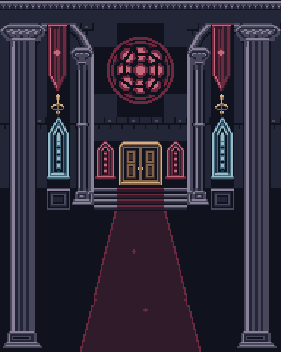
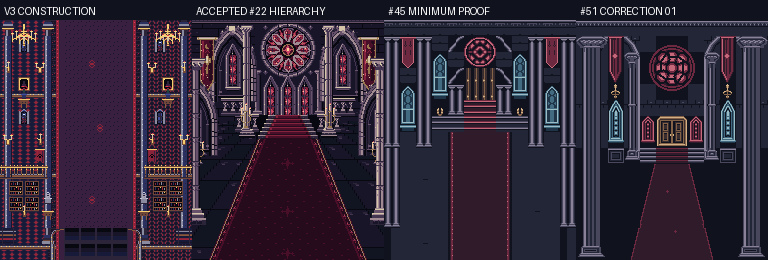
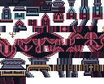
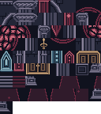

One new gameplay background. Review the native pixels first. Mechanical verification does not decide artistic acceptance.

V3 construction/economy → accepted #22 hierarchy/workmanship → #45 minimum construction proof → new #51 candidate. These are reference roles, not scores.


The witness is auxiliary. Actors and bullets are absent from the production background. Live scrolling and dense danmaku qualification remain separate.
41 selected environment assets; 196 family-aware 8×8 tiles (194 distinct RGBA patterns); 92 final 16×16 metatiles. All 180 neighborhoods fit a single subpalette. No palette swaps or exceptions.
| Background family | Shared backdrop | Three local colors |
|---|---|---|
| Stone | #10121e | #232637 · #48475c · #898299 |
| Crimson/fabric | #10121e | #301b2b · #6c293f · #c56879 |
| Warm metal/wood | #10121e | #392d30 · #846349 · #d4b185 |
| Cool glass | #10121e | #203447 · #426b81 · #9bbbc5 |


Construction map / neighborhood palette assignments · Canonical IDs and selected revisions · Exact composition and hashes
All 41 selected asset validations pass; 58 nonblocking orphan warnings are retained. No artistic acceptance, formal approval, delivery or runtime integration is claimed.
Completion record · Pre-authoring preserve/change checkpoint · Art passes and consulted sources · Packaging/repeat-run evidence · Standard verification · Construction verification